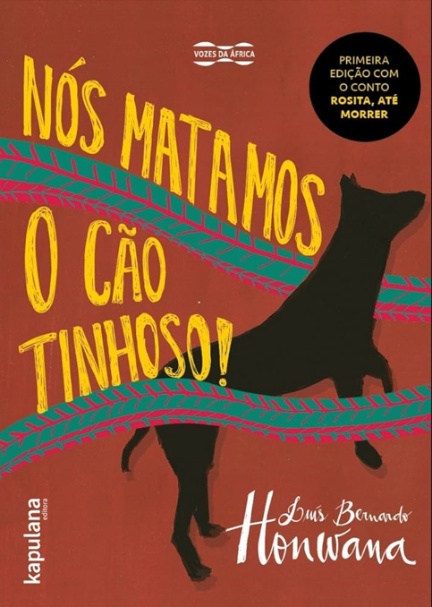

NÓS MATÁMOS O CÃO TINHOSO
Descrição do livro
O Cão-Tinhoso tinha uns olhos azuis que não tinham brilho nenhum, mas eram enormes e estavam sempre cheios de lágrimas, que lhe escorriam pelo focinho. Metiam medo aqueles olhos, assim tão grandes, a olhar como uma pessoa a pedir qualquer coisa sem querer dizer. Eu via todos os dias o Cão-Tinhoso a andar pela sombra do muro em volta do pátio da Escola, a ir para o canto das camas de poeira das galinhas do Senhor Professor. As galinhas nem fugiam, porque ele não se metia com elas, sempre a andar devagar, à procura de uma cama de poeira que não estivesse ocupada....
Baixar Livro